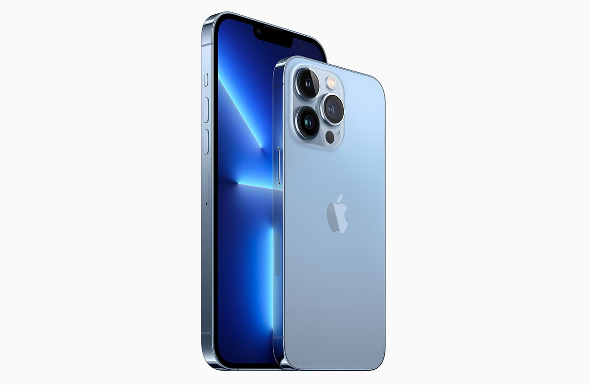

Цена на товар:125 000 Рублей
Описание товара:
iPhone 13 Pro Max. Новые камеры. Нереальные возможности.
iPhone 13 Pro Max. Грандиозный апгрейд камер Pro. Режим «Киноэффект» делает из видео настоящее кино. Дисплей Super Retina XDR с технологией ProMotion для более быстрого и плавного взаимодействия.
А15 Bionic — самый быстрый чип для iPhone. Прочный корпус и самое долгое время работы без подзарядки среди iPhone
Основные характеристики:
- Дисплей Super Retina XDR 6,7 дюйма2 с технологией ProMotion для более быстрого и плавного взаимодействия;
- Режим «Киноэффект» автоматически переводит фокус между объектами при съёмке видео и создаёт красивый эффект размытия;
- Обновлённая система камер Pro 12 Мп (телефото, широкоугольная и сверхширокоугольная); сканер LiDAR; диапазон оптического зума 6x; режим макросъёмки; Фотографические стили, видео в формате ProRes3, Smart HDR 4, Ночной режим, формат Apple ProRAW, съёмка HDR‑видео 4K в стандарте Dolby Vision;
- Фронтальная камера TrueDepth 12 Мп: Ночной режим, съёмка HDR‑видео 4K в стандарте Dolby Vision;
- A15 Bionic — самый быстрый чип для iPhone;
- До 28 часов воспроизведения видео и самое долгое время работы без подзарядки среди iPhone1;
- Панель Ceramic Shield для повышенной прочности;
- Надёжная защита от воды (IP68)4;
- iOS 15 с новыми функциями, расширяющими возможности iPhone5;
- Поддержка аксессуаров MagSafe, которые легко крепятся и обеспечивают более быструю беспроводную зарядку
Юридическая информация:
- Время работы от аккумулятора зависит от конфигурации и характера использования устройства
- Дисплей представляет собой прямоугольник с закруглёнными углами. Диагональ этого прямоугольника без учёта закруглений составляет 6,68 дюйма
- iPhone 13 Pro Max устойчив к воздействию брызг, воды и пыли и протестирован в специально поддерживаемых лабораторных условиях. Устройство имеет рейтинг IP68 по стандарту IEC 60529. Устойчивость к воздействию брызг, воды и пыли может снижаться при естественном износе. Не пытайтесь заряжать мокрый iPhone: протрите и высушите его согласно инструкциям в руководстве пользователя. Повреждение в результате контакта с жидкостью не покрывается гарантией
- Некоторые функции могут быть доступны не во всех странах и регионах